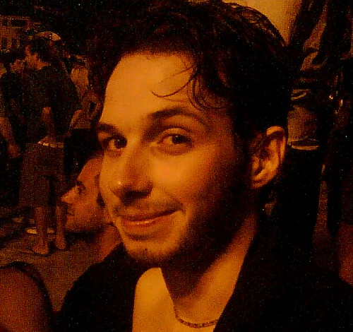
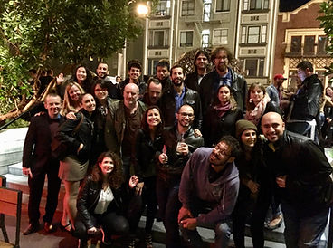
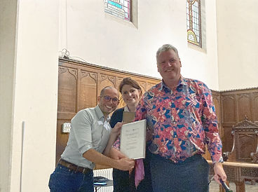
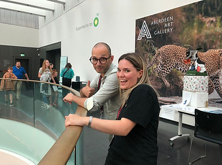
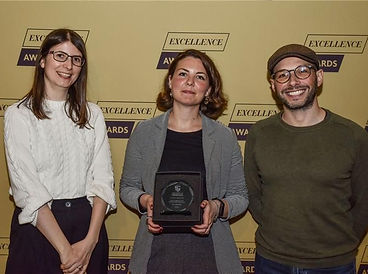
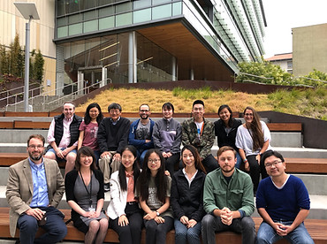
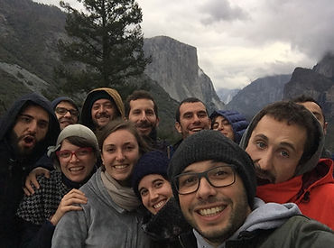
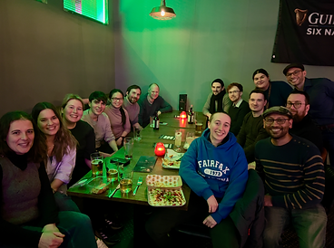
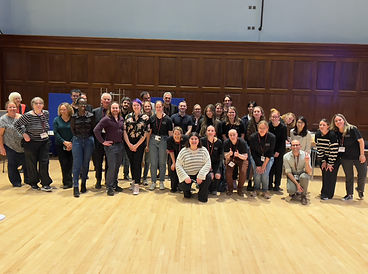
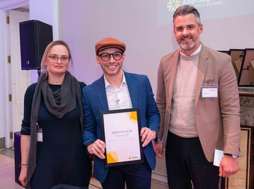

Mauro Manassi

Greetings! My name is Mauro.
I got my Bachelor's degree in Psychology of Personality and Interpersonal Relationships at Padua University (Padua, Italy). Right before getting my Master's degree in Clinical Psychology (and starting a career as a clinical psychologist), I fell in love with everything that is about Perception and Visual Neuroscience. Since then, this is what I do and I love.
After my master thesis on motion priming under the supervision of Prof. Gianluca Campana, I joined Prof. Michael Herzog's Psychophysics laboratory at École Polytechnique Fédérale de Lausanne (Lausanne, Switzerland) for a PhD in Neuroscience (2009–2014). My PhD focused on how our visual system organizes the cluttered environment around us in a coherent manner (go here for more info about my work on visual organization).
At the end of my PhD, I was awarded the Early Postdoc.Mobility fellowship by the Swiss National Science Foundation, for an 18 month postdoc in Prof. David Whitney's laboratory of Perception and Action at UC Berkeley (California, USA). Here, I became interested in how our visual system stabilizes our visual interpretations of the world, turning discontinuous and chaotic retinal images into coherent visual percepts (go here for more info about my work on visual stabilization).
In August 2019, I was appointed Lecturer (~Assistant Professor) in Psychology at the University of Aberdeen (UK). In 2022, I was awarded a prize for Best Research Article of the Year by the British Psychology Society, and I gave the keynote at the BPS Annual Cognitive Section Conference 2022. In August 2024 (25th–29th), I hosted together with Dr Constanze Hesse the 46th European Conference on Visual Perception in Aberdeen.
On a personal note, I am a very social person, always seeking new adventures and challenges. I love travelling and doing Improvisational theatre.
My curriculum vitae can be found here.
Photos








